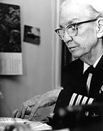

Grace Hopper
Bio
Grace Brewster Murray Hopper (née Murray; December 9, 1906 – January 1, 1992) was an American computer scientist and United States Navy Rear Admiral.[1] In 1944, she was one of the first programmers of the Harvard Mark I computer [2] and invented the first compiler for a computer programming language.[3][4][5][6][7] She popularized the idea of machine-independent programming languages, which led to the development of COBOL, one of the first high-level programming languages.
Durante su carrera, Grace Hopper trabajó para la universidad, el sector privado y el ejército. Contó entre las primeras ingenieras de software y fue famosa por su personalidad inspirante y su tenacidad enorme. Su contribución a las ciencias informáticas fue recompensada por numerosas distinciones:
- En 1950, Grace Hopper recibe el título de « programadora senior », una de las 10 primeras personas que pueden gozar de este título. En una conferencia que llegó a ser célebre, Grace Hopper predijo que el software acabará por costar más caro que el material (hardware), lo que, en esa época, era difícilmente imaginable.
- En 1969, fue la primera que recibió el premio del « Informático m/f del año ». En 1971, una nueva recompensa anual dedicada a los jóvenes científicos en informática m/f fue creada a su nombre ». * En 1983, fue promovida a comandante en la "Casa Blanca", dos años más tarde, se la npmbró "Almirante Grace Hopper" .
- En 1991, un año antes de su muerte, Grace Hopper recibió la "National Medal of Technology" (1 " por los éxitos de sus trabajos pioneros en el desarrollo de lenguajes de programación para ordenador que simplifican la tecnología informática y abren la puerta a un universo de utilizadores significativamente más amplio.
- Grace Brewster Murray Hopper (1999) J J O’Connor & E F Robertson (School of Mathematics and Statistics University of St Andrews, Scotland)
- Grace Hopper, Mother of the Computer
- Rear Admiral Grace Murray Hopper (1997) Sharron Ann Danis
